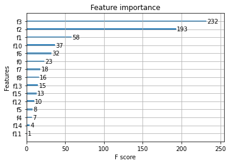
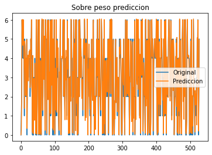
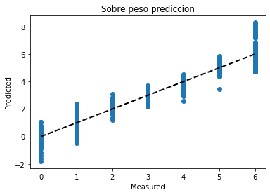

Importamos lo necesario para realizar el ejercicio
import pandas as pd
import xgboost as xgb
import numpy as np
from sklearn import linear_model
from xgboost import XGBClassifier,XGBRegressor
from sklearn.model_selection import train_test_split
from sklearn.model_selection import cross_val_score
from sklearn.model_selection import cross_val_predict
from sklearn.metrics import mean_squared_error
import matplotlib.pyplot as plt
Leemos los datos y los mostramos
data=pd.read_csv("/content/drive/MyDrive/pasantia/ObesityDataSet_raw_and_data_sinthetic.csv")
data.head()
Gender Age Height Weight family_history_with_overweight FAVC FCVC NCP CAEC SMOKE CH2O SCC FAF TUE CALC MTRANS NObeyesdad
0 Female 21.0 1.62 64.0 yes no 2.0 3.0 Sometimes no 2.0 no 0.0 1.0 no Public_Transportation Normal_Weight
1 Female 21.0 1.52 56.0 yes no 3.0 3.0 Sometimes yes 3.0 yes 3.0 0.0 Sometimes Public_Transportation Normal_Weight
2 Male 23.0 1.80 77.0 yes no 2.0 3.0 Sometimes no 2.0 no 2.0 1.0 Frequently Public_Transportation Normal_Weight
3 Male 27.0 1.80 87.0 no no 3.0 3.0 Sometimes no 2.0 no 2.0 0.0 Frequently Walking Overweight_Level_I
4 Male 22.0 1.78 89.8 no no 2.0 1.0 Sometimes no 2.0 no 0.0 0.0 Sometimes Public_Transportation Overweight_Level_II
Ahora debemos realizar una transformacion de los datos que son
cualitativos en valores numericos ya que el modelo solo funciona
con valores numericos, le presentaremos una opcion pero usted esta
en la libertad de probar otra forma
data["Gender"]=data["Gender"].map({"Male":0,"Female":1})
data["family_history_with_overweight"]=data["family_history_with_overweight"].map({"no":0,"yes":1})
data["FAVC"]=data["FAVC"].map({"no":0,"yes":1})
data["CAEC"]=data["CAEC"].map({"no":0,"Sometimes":1,"Frequently":2,"Always":3})
data["SMOKE"]=data["SMOKE"].map({"no":0,"yes":1})
data["SCC"]=data["SCC"].map({"no":0,"yes":1})
data["CALC"]=data["CALC"].map({"no":0,"Sometimes":1,"Frequently":2,"Always":3})
data["MTRANS"]=data["MTRANS"].map({"Automobile":0,"Public_Transportation":1,"Motorbike":2,"Always":3,"Bike":4,"Walking":5})
data["NObeyesdad"]=data["NObeyesdad"].map({"Insufficient_Weight":0,"Normal_Weight":1,"Overweight_Level_I":2,"Overweight_Level_II":3,"Obesity_Type_I":4,"Obesity_Type_II":5,"Obesity_Type_III":6})
data.head()
Gender Age Height Weight family_history_with_overweight FAVC FCVC NCP CAEC SMOKE CH2O SCC FAF TUE CALC MTRANS NObeyesdad
0 1 21.0 1.62 64.0 1 0 2.0 3.0 1 0 2.0 0 0.0 1.0 0 1 1
1 1 21.0 1.52 56.0 1 0 3.0 3.0 1 1 3.0 1 3.0 0.0 1 1 1
2 0 23.0 1.80 77.0 1 0 2.0 3.0 1 0 2.0 0 2.0 1.0 2 1 1
3 0 27.0 1.80 87.0 0 0 3.0 3.0 1 0 2.0 0 2.0 0.0 2 5 2
4 0 22.0 1.78 89.8 0 0 2.0 1.0 1 0 2.0 0 0.0 0.0 1 1 3
Eliminamos los datos incompletos o NAN y realizamos la separacion
de los datos en "X" para los habitos y "y" para las
clasificaciones para luego separarlos en los datos de entreno y de
prueba
data=data.dropna()
X=data.loc[:,data.columns!="NObeyesdad"]
y=data.loc[:,"NObeyesdad"]
X_train,X_test,y_train,y_test=train_test_split(X,y,random_state=1)
Ahora solo debemos inicializar la clase XGBRegressor para poder
utilizarla y realizaremos el entreno del modelo
model=XGBRegressor(objective ='reg:squarederror')
model.fit(X_train.values,y_train.values)
#Esta es la configuracion por defecto por ensayo y error se puede lograr
#una mejor configuracion de datos o algun metodo que te ayude a obtenerlos
XGBRegressor(base_score=0.5, booster='gbtree', colsample_bylevel=1,
colsample_bynode=1, colsample_bytree=1, gamma=0,
importance_type='gain', learning_rate=0.1, max_delta_step=0,
max_depth=3, min_child_weight=1, missing=None, n_estimators=100,
n_jobs=1, nthread=None, objective='reg:squarederror',
random_state=0, reg_alpha=0, reg_lambda=1, scale_pos_weight=1,
seed=None, silent=None, subsample=1, verbosity=1)
Graficamos la importancia de las variables en el modelo
xgb.plot_importance(model,ax=plt.gca())

Llego el momento de realizar las predicciones con los valores de
prueba
prediccion=model.predict(X_test.values)
#convertimos los valores en positivo
prediccion=np.absolute(prediccion)
#mostramos los 10 primeros
prediccion[0:10]
A continuacion mostraremos el puntaje de entrenamiendo del modelo,
el promedio del entrenamientoy, el error cuadratico medio y su
raiz
#miramos el puntaje de entrenamiento
score=model.score(X_train.values,y_train.values)
print("Training score: ",score)
#miramos el puntaje promedio de entrenamiento
cv_score=cross_val_score(model,X_train.values,y_train.values,cv=10)
print("CV mean score: ",cv_score.mean())
#Mostramos el Error cuadratico medio y la raiz
mse=mean_squared_error(y_test.values,prediccion)
print("MSE: ",mse)
print("RMSE: ",mse*(1/2.0))
Mostraremos dos visualizaciones de los datos para observar su
comportamiento
x_ax=range(len(y_test.values))
plt.plot(x_ax,y_test.values,label="Original")
plt.plot(x_ax,prediccion,label="Prediccion")
plt.title("Sobre peso prediccion")
plt.legend()
plt.show()

lr=linear_model.LinearRegression()
prediccion1=cross_val_predict(lr,X,y,cv=10)
fig,ax=plt.subplots()
ax.scatter(y.values,prediccion1)
ax.plot([y.min(), y.max()], [y.min(), y.max()], 'k--', lw=2)
ax.set_xlabel("Measured")
ax.set_ylabel("Predicted")
plt.title("Sobre peso prediccion")
plt.show()

Llegados a este punto nuestro modelo ha sido entrenado y ya esta
en la capacidad de predecir dependendo de los valores que le
introduzcas, te dejamos unas ideas para que practiques, analices y
aprendas mucho mas sobre este gran modelo
#test de dato
from numpy import asarray
#row=[1,24.0,1.77,73.0,1,0,3.0,3.0,1,0,2.0,0,1.0,1.0,0,1]
row=[0,18.0,1.77,90.0,1,0,3.0,3.0,1,0,2.0,0,1.0,1.0,0,1]
#row=[0,30.0,1.67,90.0,1,0,3.0,3.0,1,0,2.0,0,1.0,1.0,0,1]
nueva_data=asarray([row])
prediccion_test=model.predict(nueva_data)
print("Prediccion: ",prediccion_test)